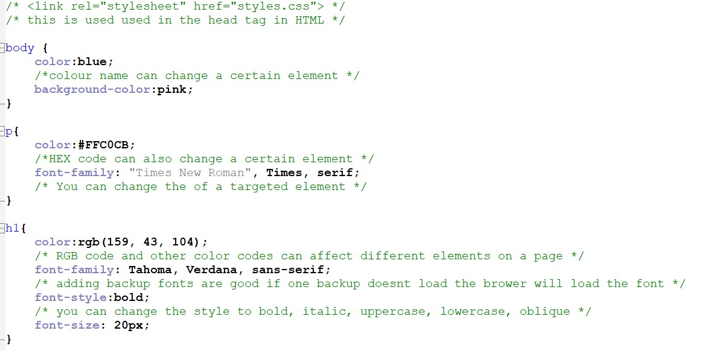
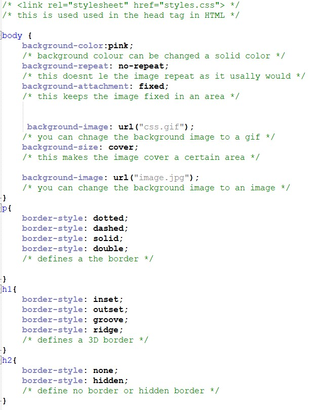

Learn about CSS
What is CSS?
CSS stands for cascading style sheets.
CSS is used style a HTML document.
CSS shows how HTMl elements are displayed on a page.
CSS can control the layout snd setup of many different HTML pages.
Style defintions are saved as external .css files.
How to change the font and colour
Colors are specefied using predefined color names, or HEX, HSL, RGB, RGBA, HSLA values.
RGB stnds for Red, Green and Blue. Each color defines the intensity of the color between 0 and 255.
HEX stands for hexidecimal, this specified with #RRGGBB.
HSL stands for hue stauration and lightness.
You can also change the font of the background of website similar to changing the color of the font.
Choosing the right font creates a huge impact on your website.
There is five generic styles of fonts, sans-serif is the most legible font for websites than serif font
You can use google fonts to change the fonts too.

How to change the background and create borders
When using a background image use an image that does not disturb the background.
By default the background image will repeat both horizontally and vertically.
The background-position sets the postion of the background image.
You can choose the background to repeat x-axis or y-axis lenght.
The background-repeat sets how the background image will be repeated.
The border-style helps to display the border style.
The border-style property can have one of four different type of values.
The differnet type of values are top border, right border, left border and bottom border.
